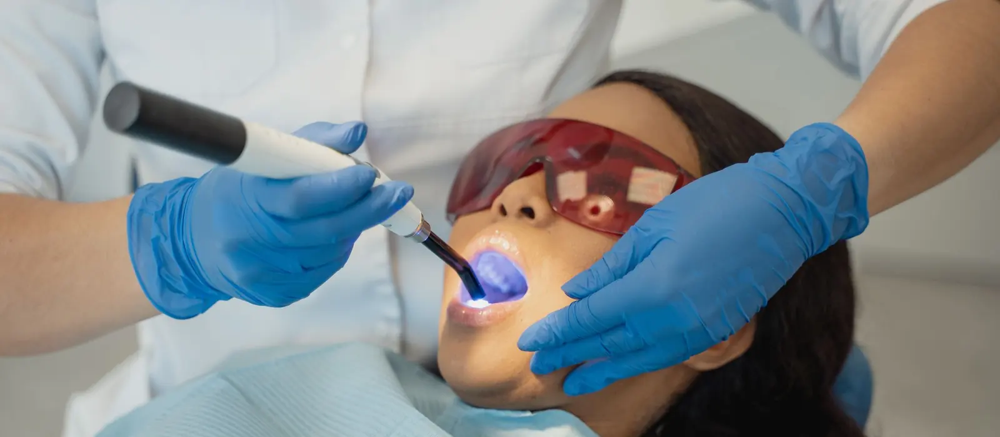
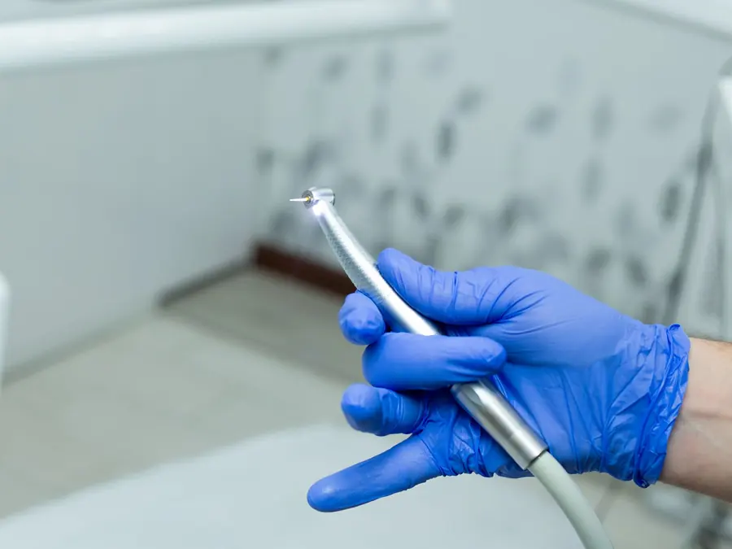

Teeth Filling
(Tooth-Coloured)
Repairs a cavity before it reaches the nerve, using composite matched to the shade of your own tooth. Almost always finished in a single visit.
What a filling is actually repairing
Bacteria in plaque turn the sugar and starch in your food into acid. That acid dissolves minerals out of the enamel, and if it happens faster than saliva can put them back, the surface eventually breaks. Under the enamel is dentine, which is softer, so once decay is through, it spreads more quickly and hollows the tooth out from the inside.
A tooth cannot rebuild that. A filling removes the decayed tissue, cleans the cavity and rebuilds the missing part of the tooth with composite — a tooth-coloured resin that is bonded to the remaining structure and hardened with a curing light.
Why the timing matters more than anything else
Decay does not stay the same size. Where it has reached decides which treatment you need, and each stage costs more and takes longer than the last:
- Enamel only — no symptoms at all. A small filling, sometimes none.
- Into dentine — sharp twinges with cold or sweet things that stop quickly. A straightforward filling.
- Reaching the pulp — deep, lingering or night-time pain. Now it needs a root canal and a crown.
- Beyond saving — extraction, and then a gap to replace with an implant, bridge or denture.
The point of a check-up is to catch it at the first or second stage, when it is still a filling. That is also why cavities between teeth matter: they are invisible from the outside and are only found on a bitewing X-ray.
The materials, and why we use composite
Composite bonds chemically to the tooth, so less healthy structure has to be cut away to hold it in place, and it matches your own shade. It is set hard before you leave the chair, so you can eat straight away.
Glass ionomer, which releases fluoride, is used in specific situations — on root surfaces, in children’s teeth, or as a temporary. Where a cavity is too large for a direct filling to be strong enough, rebuilding it with an inlay, onlay or crown is the honest answer, and you will be told that rather than given an oversized filling that fractures in a year.
- Time in the chair
- 20–45 min per tooth
- Visits
- Usually one
- Anaesthetic
- Local, for deeper cavities
- Eating after
- Straight away
What happens at
your appointment
So there are no surprises: this is the sequence a filling follows at Evara Dental Clinic.
-
Examination and X-ray if needed
How deep the decay has gone decides the treatment, and a cavity between two teeth cannot be judged by eye. Where an X-ray is taken, you see it on the screen and have the findings explained before anything is decided.
-
Shade matching
The composite shade is chosen against your own tooth at the start, while it is still moist. Teeth lighten as they dry out under the light, so a shade picked halfway through the appointment is the wrong one.
-
Local anaesthetic, if the cavity is deep
Enamel has no nerve supply, so a shallow filling often needs nothing. Anything deeper is numbed, and work does not start until you confirm the area is numb.
-
Removing the decay
Only the softened, infected tissue is taken out; sound tooth is left alone. This is the part with the handpiece, and what you feel is vibration and water spray rather than pain.
-
Bonding and layering
The cavity is kept dry — composite will not bond to a wet tooth — and an adhesive is applied. The composite then goes in as a series of thin layers, each hardened with a blue curing light, and is shaped to match the tooth’s own contours.
-
Bite check and polish
You bite on marking paper so any high spot can be adjusted. A filling left even a fraction high causes aching for weeks, so this step is not rushed. The filling is then polished smooth, which is what keeps plaque off its margins.
Aftercare
A composite filling is fully set when you stand up, so there is no waiting period before you eat. The rest is mostly about the first few hours and the first few weeks.

- If you were numbed, wait until sensation is fully back — usually one to three hours — before eating or drinking anything hot. Biting a numb cheek or lip is the most common injury after a filling, and children need watching for it.
- Mild sensitivity to cold for a few days, or a few weeks after a deep filling, is expected and should fade week by week.
- If the bite feels high, or the tooth aches when you bite down after two or three days, come back. It takes a minute to adjust and it will not settle on its own.
- Pain that lingers well after something cold has gone, or that wakes you at night, is a different signal: the nerve may be involved. Call the clinic rather than waiting it out.
- Clean between your teeth daily. New decay most often starts between teeth and at the margins of existing fillings, which is exactly where a brush never reaches.
What it costs
You are told the cost in writing after the examination, before any treatment starts, and nothing is added during the appointment without asking you first.
What changes the price
How many surfaces of the tooth are involved — a small pit on the biting surface is not the same job as a cavity that runs between two teeth; which material suits the tooth; whether a deep cavity needs a protective liner over the nerve; and whether the tooth has lost too much structure for a filling, in which case an onlay or crown is the more durable answer.
“I am extremely happy with the treatment I received at Evara Dental Clinic. Dr. Kshitija is highly professional and took the time to explain my dental issues in great detail before starting. She and her staff ensured that my filling procedure was smooth, efficient, and entirely stress-free.”
Sara Virkud · Google review · Filling
Teeth filling: common questions
Does getting a filling hurt?
A shallow cavity in enamel often needs no anaesthetic at all, because enamel has no nerve supply. Anything deeper is numbed first, and the procedure does not begin until you confirm the area is numb. What you feel then is vibration, water and pressure.
How long does a filling last?
Many years, and often far longer, but no filling is permanent. It depends on how large it is, which tooth it is in, whether you grind your teeth at night, and how well the margins are kept clean. Fillings are checked at every routine visit and replaced when the margin starts to leak — not on a schedule.
Can a cavity heal on its own?
Only at the very earliest stage. A white-spot lesion, where enamel has lost minerals but the surface is still intact, can remineralise with fluoride and better cleaning. Once the surface has broken and there is a hole, the tooth has no way to rebuild it and the decay keeps spreading.
Do you use silver amalgam fillings?
We place tooth-coloured composite. Because it bonds to the tooth, less healthy structure has to be cut away to hold it, and it matches your own shade. If you already have sound silver fillings, there is no reason to replace them just for being silver — they are replaced when they fracture, leak or have decay underneath.
Why is my tooth sensitive after a filling?
Deep decay irritates the nerve inside the tooth, and so does the treatment that removes it. Mild cold sensitivity for a few days to a few weeks is normal and should be fading. Pain that lingers after the cold is gone, or that wakes you at night, is a different thing and should be checked.
Is it worth filling a cavity in a milk tooth?
Usually, yes. Milk teeth hold the space for the adult teeth coming behind them, and an untreated cavity can turn into an infection that affects the permanent tooth developing underneath. Losing a milk tooth years early also crowds the adult teeth that follow.
Can several fillings be done in one appointment?
Often yes, particularly when they are on the same side, since one injection covers the area. Whether it is sensible depends on how long you are comfortable sitting and how large the cavities are. You will be given the choice rather than booked in for the maximum.
Related treatments
Root Canal Treatment
When decay has already reached the nerve and a filling is no longer enough to save the tooth.
Read more →Teeth Cleaning
Scaling and polishing, and the check-up that finds cavities while they are still small.
Read more →Crowns, Bridges & Rebuilding
For teeth that have lost too much structure for a filling to hold reliably.
See all treatments →Get that tooth looked at
Sector 18, Kharghar. Morning and evening slots, Monday to Saturday, Sunday by appointment.